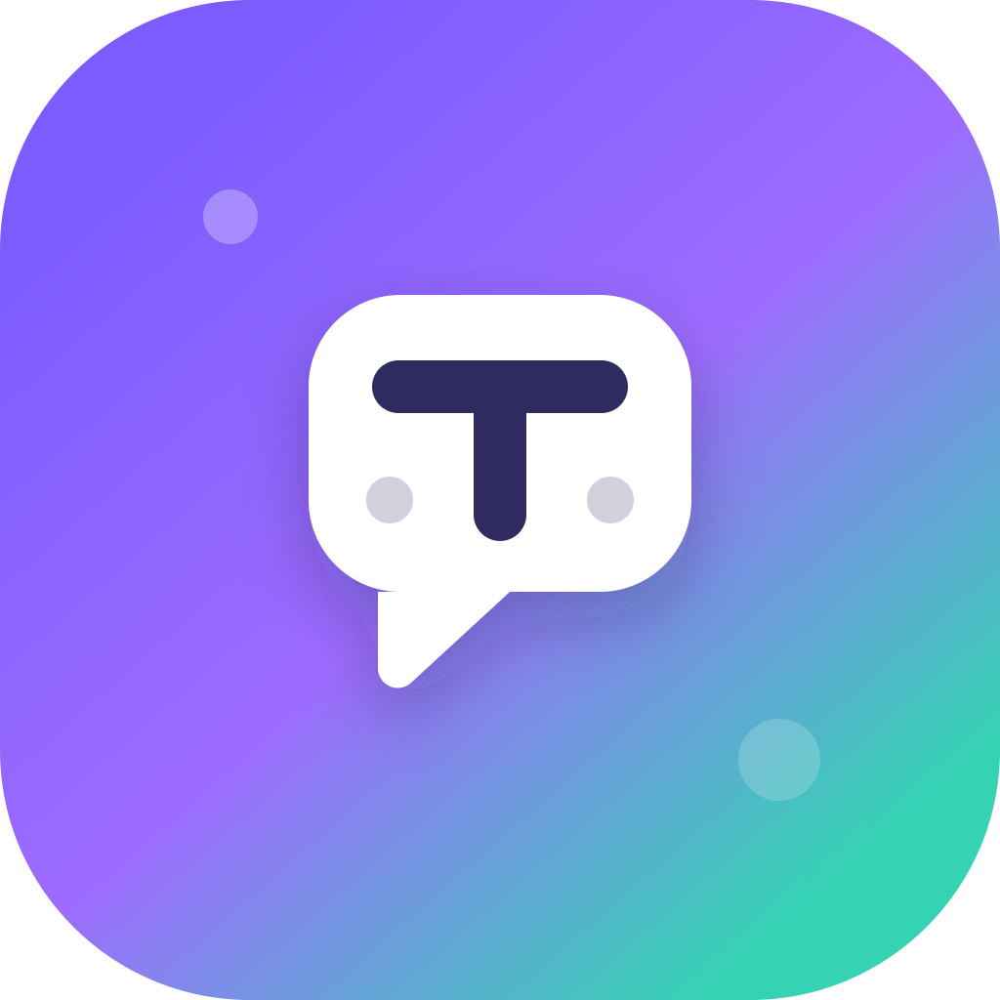
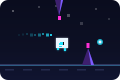

Backend Developer
Paideia Educational Solutions · Full-time · Nov 2021 – Present
Backend Developer Portfolio
Backend Developer with experience building APIs and backend systems using Python and Go. With the help of AI coding tools, I've also extended into frontend work, taking projects fullstack end-to-end.
For recruiters and hiring teams
This page focuses on evidence, not only a project list: product context, key features, technology stack, and technical contribution areas that recruiters can scan quickly.
About
As a Backend Developer, I specialize in building robust APIs, optimizing database queries, and designing scalable system architectures. With the help of AI coding tools, I've also expanded into frontend work, allowing me to take projects fullstack from end to end.
I have hands-on experience with Python (FastAPI, Falcon) and Go (Gin), along with PostgreSQL database management, and I care about clean code, automated testing, and product-driven development.
All projects in this portfolio are built with AI-assisted development (vibe coding) using tools like Codex, Gemini, Claude, and Opencode — helping me move faster while keeping code quality in check.
LinkedIn profile
Paideia Educational Solutions · Full-time · Nov 2021 – Present
Computer and Network Engineering (TKJ) · Jun 2020 – May 2023
Focused on backend systems, database management, and clean maintainable code.
Selected work

AI-powered learning platform for Indonesian students (K–12) with tutor chat, practice questions, and gamification.

Anonymous topic-based chat bot with user matching, admin commands, and ban system.
Full-stack QA automation platform with live dashboard, slow API detection, video recording, and real-time SSE streaming.
Fast URL shortener API with custom slugs, QR code generation, click analytics, rate limiting, and URL expiration.

Reusable offline runner / glider engine with theming support, Service Worker offline kit, and npm distribution.
Technical range
React, Next.js, Vite, TailwindCSS, responsive UI, dashboard flow.
Go Gin, FastAPI, Django, Flask, Litestar, Falcon, Node.js, REST API, auth, service layer.
PostgreSQL, Supabase, SQLAlchemy, Pony ORM, Drizzle, Docker.
Gemini integration, Playwright, API monitoring, SSE streaming, reporting, CLI tooling (Typer, Jinja2).
Next step
Feel free to reach out via email or connect on LinkedIn. I'm actively looking for backend developer opportunities and open to discussing projects, collaboration, or any questions about my work.